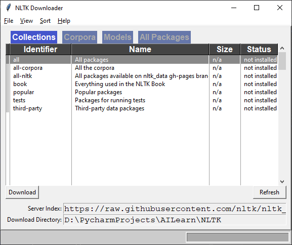

10
Xử lý ngôn ngữ tự nhiên
Natural Language Processing
Xử lý ngôn ngữ tự nhiên (natural language processing –NLP) là một một phương pháp kỹ thuật xử lý các ngôn ngữ tự nhiên bằng máy tính. Ở đây có vấn đề cần làm rõ là Natural Language – ngôn ngữ giao tiếp giữa người với người, và ngôn ngữ máy móc ( program language, machine language). NLP có 2 điều cơ bản cần nghiên cứu và phát triển là xử lý từ ngữ bằng máy và làm cho máy hiểu được những từ ngữ này. Chúng ta sẽ thảo luận về vài khái niệm như tách chuỗi thành từ, cụm từ, từ khóa (tokenization), (tiền tố, hậu tố) steaming, phân tích hình thái (lemmatization) để xử lý đoạn văn bản. Chúng ta cũng sẽ thảo luận về việc xây dựng một (Bag of Words model) mô hình túi đựng từ và dùng nó để phân loại văn bản. Chúng ta sẽ thao luận về chủ đề mô hình hóa và phát triện một hệ thống nhận diện chủ đề được đưa ra trong một văn bản.
Các chủ đề chính trong chương này:
Giới thiệu và cài đặt các thư viện (packages)
NLP là một phần quan trọng của những hệ thống hiện đại. Nó được sử dụng rộng rãi trong các máy tìm kiếm, giao diện đàm thoại, bộ xử lý văn bản, và …. Máy có thể quản lý cấu trúc khá tốt. Nhưng khi nó làm việc cùng với một văn bản ngẫu nhiên thì nó sẽ mất thời gian để xử lý. Mục đích của NLP là phát triển những thuật toán có thể giúp máy tính hiểu được những văn bản tự do và giúp chúng hiểu được ngôn ngữ.
Một trong những thách thức ở đây là quá trình xử lý các văn bản ngôn ngữ có quá nhiều biến thể. Bối cảnh đóng vai trò rất quan trọng để hiểu được một câu cụ thể. Con người có thể hiểu được điều đó một cách tự động bởi vì chúng ta đã được luyện tập, học hỏi trong rất nhiều năm. Chúng ta lập tức sử dụng những hiểu biết của chúng ta đã học hoặc biết trong quá khứ để hiểu được bối cảnh và biết người khác đang nói về cái gì.
Để giải quyết vấn đề này, các nhà nghiên cứu về NLP đã bắt đầu phát triển các ứng dụng khác nhau bằng cách sử dụng phương pháp ML (machine learning). Để xây dựng những ứng dụng như thế, chúng ta cần thu thập một lượng lớn các tập tài liệu về văn bản và dạy thuật toán thực hiện các nhiệm vụ khác nhau như: phân loại văn bản (categories text), phân tích tâm lý ( analyzer sentiments), hoặc phân loại chủ đề ( modeling topics). Những thuật toán đã được dạy dỗ (trained) có thể phát hiện các mẫu trong một tập tin input và nhận được những thông tin chi tiết từ nó.
Trong chương này chúng ta sẽ thảo luận một vài khái niệm cơ bản được sử dụng để phân tích văn bản và xây dựng ứng dụng NLP. Nó sẽ giúp chúng ta hiểu được cách phân tách những thông tin chính từ một tập tin dữ liệu có sẵn.
Chúng ta sẽ sử dụng một thư viện có sẵn tên là Natural Language Toolkit(NLTk) để xây dựng ứng dụng. Cách cài đặt thư viện ngoài thì đã nói ở những phần trước. NLTk cần phải được download dữ liệu. sau khi cài bạn cần dùng Terminal để download:
$ python3
>>>import nltk
>>>nltk.download()
Sau đó bảng NLTK Downloader sẽ hiện ra

Chọn AllPackage, chọn đường dẫn tới nơi cần download Ctrl+A để chọn hết -sau đó bấm nút Download.
Để đường dẫn Download Directory là default sẽ vào RoamingData còn nếu bạn muốn download vào thư mục xác định thì phải chỉnh đường dẫn cho nltk biết source data nằm ở đâu như sau:
import nltk
nltk.data.path.append("D:\\PycharmProjects\\AILearn\\NLTK")
Hoặc chỉnh path cho Environtment nếu ban dùng windows: NLTK_DATA = Path to Data
Ngoài ra chúng ta cũng cần dùng thêm một vài thư viện nữa
https://radimrehurek.com/gensim/
Phân tách chuỗi dữ liệu văn bản(Tokenizing)
Khi chúng ta làm việc với văn bản chúng ta cần phải cắt chúng thành những đoạn ngắn hơn để phân tích. Đây là lúc mà chúng ta cần tìm hiểu về Tokenizing. Nó là quá trính sử lý phân chia văn bản được nhập vào thành một bộ những mảnh nhỏ như là từ, hoặc câu. Những mảnh nhỏ này được gọi là tokens. Dựa trên những gì chúng ta muốn làm chúng ta có thể định nghĩa những hàm chia văn bản thành bao nhiêu tokens. Giờ ta dùng thư viện NLTK đã cài đặt để phân tách chuỗi dữ liệu.
import nltk
nltk.data.path.append("D:\\PycharmProjects\\AILearn\\NLTK")
from nltk.tokenize import sent_tokenize,word_tokenize,WordPunctTokenizer
# Tạo một đoạn văn bản input để sử dụng tokenization
input_text="Hôm nay trời đẹp, 25* C. Chúng ta nên đi ra ngoài chơi. Hôm qua trời mưa tao ở nhà ngủ. Còn mày có đi chơi không ?"
# Chia đoạn trên thành các câu tokens
print("\nChuyển đoạn văn thành câu:")
print(sent_tokenize(input_text))
# Chia đoạn trên thành các từ
print("\nChuyển đoạn trên thành các từ")
print(word_tokenize(input_text))
# Chia đoạn trên thành các từ sử dụng hàm Word Punct Token
print("Token by WordPunctToken")
print(WordPunctTokenizer().tokenize(input_text))
Kết quả:
Chuyển đoạn văn thành câu:
['Hôm nay trời đẹp, 25* C. Chúng ta nên đi ra ngoài chơi.', 'Hôm qua trời mưa tao ở nhà ngủ.', 'Còn mày có đi chơi không ?']
Chuyển đoạn trên thành các từ
['Hôm', 'nay', 'trời', 'đẹp', ',', '25*', 'C.', 'Chúng', 'ta', 'nên', 'đi', 'ra', 'ngoài', 'chơi', '.', 'Hôm', 'qua', 'trời', 'mưa', 'tao', 'ở', 'nhà', 'ngủ', '.', 'Còn', 'mày', 'có', 'đi', 'chơi', 'không', '?']
Token by WordPunctToken
['Hôm', 'nay', 'trời', 'đẹp', ',', '25', '*', 'C', '.', 'Chúng', 'ta', 'nên', 'đi', 'ra', 'ngoài', 'chơi', '.', 'Hôm', 'qua', 'trời', 'mưa', 'tao', 'ở', 'nhà', 'ngủ', '.', 'Còn', 'mày', 'có',
'đi', 'chơi', 'không', '?']
Chuyển đồi Từ thành dạng cơ bản của chúng sử dụng stemming
Làm việc với văn bản chúng ta sẽ gặp rất nhiều biến thể bao gồm trong đó. Chúng ta phải xem xét các dạng khác nhau của từ để làm cho máy tính hiểu đó là những từ khác nhau đó có cùng dạng cơ bản. Ví dụ từ sing trong tiếng anh có rất nhiều biến thể giống như sang, singer, singing, và những từ kiểu như thế rất nhiều. Chúng ta thấy đó là một tập hợp các từ có ý nghĩa tương tượng. Con người có thể dễ dàng nhận ra điều đó nhờ bối cảnh.
Khi chúng ta phân tích văn bản, sẽ hữu dụng hơn nếu chúng ta tách nó thành dạng cơ bản. Nó sẽ giúp chúng ta phân tách số liệu hữu ích để phân tích văn bản input. Stemming là một cách để làm điều đó. Mục đích của một bộ Chuyển đổi Stemmer là giảm số lượng từ nhờ biến đổi những định dạng khác nhau của chúng thành dạng cơ bản. Nó cơ bản là quá trình xử lý heuristic nó sẽ bỏ các giá trị tiền tố (un-happy) hoặc hậu tố (happi-ness) của từ để biến nó thành dạng cơ bản ( điều này méo có giá trị trong tiếng Việt).
import nltk
nltk.data.path.append("D:\\PycharmProjects\\AILearn\\NLTK")
from nltk.stem.porter import PorterStemmer
from nltk.stem.lancaster import LancasterStemmer
from nltk.stem.snowball import SnowballStemmer
input_words=['writing', 'calves', 'be', 'branded', 'horse', 'randomize', 'possibly', 'provision', 'hospital', 'kept', 'scratchy', 'code']
porter=PorterStemmer()
lancaster=LancasterStemmer()
snowball=SnowballStemmer('english')
#Tạo list tên stemmer để hiển thị ra màn hình
stemmer_names=['Porter','Lancaster','Snowball']
formatted_text = '{:>16}' * (len(stemmer_names) + 1)
print('\n', formatted_text.format('INPUT WORD', *stemmer_names), '\n', '='*68)
# Tạo vòng lặp để stem các từ sử dụng 3 stemmer:
for word in input_words:
output = [word, porter.stem(word), lancaster.stem(word), snowball.stem(word)]
print(formatted_text.format(*output))
Kết quả:
INPUT WORD Porter Lancaster Snowball
====================================================================
writing write writ write
calves calv calv calv
be be be be
branded brand brand brand
horse hors hors hors
randomize random random random
possibly possibl poss possibl
provision provis provid provis
hospital hospit hospit hospit
kept kept kept kept
scratchy scratchi scratchy scratchi
code code cod code
Hãy nói một chút về 3 thuật toán stemming đã dùng ở đây. Về cơ bản thì nó đều cố gắng để steam từ thành dạng cơ bản. Các khác giữa 3 thuật toán này là mức độ quản lý từ được dùng để chuyển đổi thành dạng cơ bản.
Porter là cái quản lý ít nghiêm ngặt nhất ngược lại là Landcaster. Nếu bạn nhìn vào kết quả output bạn sẽ thấy điều khác nhau khi xử lý cùng một từ. Vd nhìn vào Input_word là possibibly Porter ra kết quả là possibl và Landcaster là poss. Kết quả của Landcasster có vấn đề một chút vì nó giảm lượng từ quá nhiều. Nếu tính về thời gian sử lý thì Landcaster nhanh hơn và lựa chọn tối ưu cho vấn đề này là dùng Snowball. Nó được lợi cả về thời gian sử lý và mức độ ngắt từ.
Chuyển đổi từ về dạng cơ bản của nó sử dụng lemmatization
Lemmatization là một cách khác để chuyển đổi từ về dạng cơ bản. Trong phần trước chúng ta thấy từ cơ bản được chuyển thể từ steamer có vẻ không được ổn cho lắm. Ví dụ nó chuyển từ
calves- từ này có nhiều nghĩa như bò con,da bò , khờ khạo….xx.t lại chuyển thành calv gần như ko có nghĩa, cái này không đúng với thực tế. Lemmatization có thể giải quyết được vấn đề này:
import nltk
nltk.data.path.append("D:\\PycharmProjects\\AILearn\\NLTK")
from nltk.stem import WordNetLemmatizer
input_words=['writing', 'calves', 'be', 'branded', 'horse', 'randomize', 'possibly', 'provision', 'hospital', 'kept', 'scratchy', 'code']
lemmatizer=WordNetLemmatizer()
lemmatizer_names = ['NOUN LEMMATIZER', 'VERB LEMMATIZER']
formatted_text = '{:>24}' * (len(lemmatizer_names) + 1)
print('\n', formatted_text.format('INPUT WORD', *lemmatizer_names), '\n', '='*75)
for word in input_words:
output = [word, lemmatizer.lemmatize(word, pos='n'),
lemmatizer.lemmatize(word, pos='v')]
print(formatted_text.format(*output))
Kết quả
INPUT WORD NOUN LEMMATIZER VERB LEMMATIZER
===================================================================
writing writing write
calves calf calve
be be be
branded branded brand
horse horse horse
randomize randomize randomize
possibly possibly possibly
provision provision provision
hospital hospital hospital
kept kept keep
scratchy scratchy scratchy
code code code
Nhìn vào kết quả của 2 phép chuyển đổi (steamer và lemmatizer) bạn đã hiểu chúng khác nhau thế nào chưa. Chưa hiểu thì đọc lại nhé.
Chia dữ liệu văn bản thành các đoạn nhỏ
Văn bản dữ liệu thường cần phải được chia thành các mảnh nhỏ để dễ phân tích. Quá trình xử lý này được gọi là chunking. Nó thường được dùng để phân tích văn bản. Các điều kiện được sử dụng để phân chia văng bản thành các đoạn nhỏ dựa trên những vấn đề chúng ta đang có trong tay. Trong quá trình phân chia (chunking), chúng ta không cần phải tuân thủ ràng buộc nào là kết quả đầu ra phải là những đoạn có ý nghĩa.
Khi chúng ta gặp phải những tài liệu văn bản lớn, điều này sẽ rất quan trọng để chia những văn bản thành những đoạn nhỏ thông tin chính xác.Trong phần này, chúng ta sẽ xem cách nào để chia những đoạn văn bản thành từng mảnh.
# Tạo hàm chunk để chia dữ liệu input thành những đoạn nhỏ. Tham số đầu tiên là input text và tham số thứ 2 là số từ trong mỗi đoạn
def chunker(input_data,N):
input_words=input_data.split(' ')
output=[]
# Lặp tất cả văn bản để chia chúng vào từng đoạn
cur_chunk=[]
count=0
for word in input_words:
cur_chunk.append(word)
count+=1
if count==N:
output.append(' '.join(cur_chunk))
count,cur_chunk=0,[]
output.append(' '.join(cur_chunk))
return output
def inputTxt():
input_file = open("data/chap10/doaremon.txt", 'r', encoding='utf-8')
# Loại bỏ các dòng
input_string = input_file.read().splitlines()
# Join array lại thành string
input_string=" ".join(input_string)
return input_string
if __name__=="__main__":
chunk_size = 100
chunks=chunker(inputTxt(),chunk_size)
print('\nSố mảnh trong đoạn văn =',len(chunks),'\n')
for i,chunk in enumerate(chunks):
print("Đoạn",i+1,'==>',chunk[:50])
Kết quả:
Số mảnh trong đoạn văn = 10
Đoạn 1 ==> Mới đọc lại Doraemon và nhận ra một số thứ.Cả 5 đứ
Đoạn 2 ==> kì lâu đời, toàn trai phố, gái phố. Đám này khác v
Đoạn 3 ==> ra cái hỏng hết, đắt ở đất chứ nhà không ở được, t
Đoạn 4 ==> không nghèo. Nhà mặt tiền đất trung tâm phố cổ Tok
Đoạn 5 ==> tược đàng hoàng. Nhà còn mua hẳn piano, violin cho
Đoạn 6 ==> kề ở khắp nơi, thường xuyên cho con đi du lịch, ch
Đoạn 7 ==> đồ họa, công trình, lắp ráp robot, cơ khí các kiểu
Đoạn 8 ==> anh thế phiệt, con quan chức, chính khách, không c
Đoạn 9 ==> cũng biết, giỏi toàn năng, chuẩn con nhà người ta
Đoạn 10 ==> bù trừ thì có thể Dekhi là bê đê, bóng kín không t
Trích xuất tần số thuất hiện sử dụng mô hình Bag of Words
Một trong những mục đích chính của phân tích văn bản là chuyển đổi văn bản thành số (số hóa dữ liệu) và chúng ta có thể sử dụng ML để làm việc này. Hãy xem xét một tài liệu văn bản chứa cả triệu từ . Để giải phân tích văn bản này, chúng ta cần phải phân tách văn bản và chuyển đổi nó thành dạng số hóa.
Thuật toán ML cần ở dạng số để làm việc để chúng có thể phân tích dữ liệu và trích xuất thông tin hữu ích. Đây là lúc chúng ta lôi mô hình Bag of Words ra để sử dụng. Mô hình trich xuất này trích xuất một từ vựng từ tất cả các từ có trong tài liệu và xây dựng một mô hình sử dụng ma trận thuật ngữ tài liệu. Nó cho phép chúng ta miêu tả mọi tài liệu thành bag of words. (Vietnamese gọi là túi khôn). Chúng ta theo dõi số lượng từ và bỏ qua chi tiết về ngữ pháp và vị trí các từ.
Ma trận thuật ngữ tài liệu: (document-term matrix). Là một bảng cung cấp cho chúng ta số lượng từ khác nhau xảy ra trong tài liệu. Vì vậy một tài liệu văn bản có thể biểu diễn dưới dạng kết hợp số lượng của các từ khác nhau. Chúng ta có thể đặt ngưỡng và chọn những từ có ý nghĩa hơn. Theo một cách nào đó chúng ta đang xây dựng một biểu đồ của tất cả các từ trong tài liệu sẽ được sử dụng như một vector tính năng. Vector tính năng này được sử dụng để phân loại văn bản.
Xét những câu sau:
Nếu bạn xem xét cả 3 câu trên thì bạn sẽ thấy nó gồm 17 từ sau:
Có 17 từ riêng biệt ở đây và giờ ta sẽ xây dựng lại biểu đồ của mỗi câu dựa trên số lượng từ ở mỗi câu. Mỗi vector tính năng sẽ có 17 cột bởi vì chúng ta có 17 từ riêng biệt tất cả.
Ta đánh dấu các vị trí xuất hiện của các từ và diễn tả lại câu theo dạng vector tính năng. Vì có tất cả 17 từ nên ta sẽ tạo 1 vector 17 cột từ đó xuất hiện ở vị trí bao nhiêu trên bảng xếp hạng trên cùng thì ta sẽ đánh dấu số "1" vào đó. Nếu trong câu xuất hiện 1 từ 2 lần thì sẽ đánh dấu số "2". Giờ thì ta đã xong công việc "số hóa" tài liệu và có thể dùng thuật toán ML để phân tích dữ liệu
Giờ ta thử xây dựng mô hình "Túi khôn" Bag of Words bằng NLTK.
import numpy as np
from sklearn.feature_extraction.text import CountVectorizer
from chunks_text import chunker,inputTxt
# Tạo cỡ đoạn văn
chunk_size=200
# Chia text thành các đoạn văn:
text_chunk=chunker(inputTxt(),chunk_size)
chunks=[]
for count,chunk in enumerate(text_chunk):
d={'index':count,'text':chunk}
chunks.append(d)
# Ta sử dụng hàm CountVectorizer đề đếm số lượng từ và biến đổi chúng thành ma trận số hóa
countvectorizer=CountVectorizer(min_df=5,max_df=20)
#print(chunks)
document_termatrix=countvectorizer.fit_transform(chunk['text'] for chunk in chunks)
vocalbulary=np.array(countvectorizer.get_feature_names())
print("\nVolcabulary\n",vocalbulary)
for i,chunk in enumerate(text_chunk):
print("Đoạn",i+1,'==>',chunk[:50])
chunk_names = []
for i in range(len(text_chunk)):
chunk_names.append('Đoạn-' + str(i+1))
# Print the document term matrix
print("\nDocument term matrix:")
formatted_text = '{:>12}' * (len(chunk_names) + 1)
print('\n', formatted_text.format('Word', *chunk_names), '\n')
for word, item in zip(vocalbulary, document_termatrix.T):
# 'item' is a 'csr_matrix' data structure
output = [word] + [str(freq) for freq in item.data]
print(formatted_text.format(*output))
Kết quả:
Volcabulary
['con' 'có' 'cũng' 'không' 'kiểu' 'làm' 'nhà' 'nobita']
Đoạn 1 ==> Mới đọc lại Doraemon và nhận ra một số thứ.Cả 5 đứ
Đoạn 2 ==> ra cái hỏng hết, đắt ở đất chứ nhà không ở được, t
Đoạn 3 ==> tược đàng hoàng. Nhà còn mua hẳn piano, violin cho
Đoạn 4 ==> đồ họa, công trình, lắp ráp robot, cơ khí các kiểu
Đoạn 5 ==> cũng biết, giỏi toàn năng, chuẩn con nhà người ta
Document term matrix:
Word Đoạn-1 Đoạn-2 Đoạn-3 Đoạn-4 Đoạn-5
con 1 2 3 2 2
có 2 4 4 4 5
cũng 2 1 2 1 2
không 2 5 3 4 6
kiểu 3 1 2 4 1
làm 1 1 1 1 2
nhà 6 7 6 4 2
nobita 3 2 1 2 6
Xây dựng một bộ phân loại thể loại văn bản
Một bộ dự đoán thể loại văn bản được sử dụng để phân loại thể loại văn bản được nhập vào. Nó thường được sử dụng trong phân loại văn bản thành các thể loại tài liệu. Các bộ máy tìm kiếm cũng thường dùng ứng dụng này để xắp xếp kết quả tìm kiếm liên quan. Ví dụ chúng ta muốn dự đoán xem câu được người dùng đưa ra thuộc thể loại thể thao, chính trị, hay khoa học. Để làm điều này chúng ta xây dựng một tập dữ liệu và đào tạo một thuật toán (train an algorithm). Thuật toán này có thể sử dụng để suy luận (inference) trên một dữ liệu không biết.
Để xây dựng bộ phân loại này, chúng ta sử dụng một thống kê được gọi là ( TermFrequency-Inverse document Frequency(tf-idf) –tf:tạm dịch là tần suất của một từ trong văn bản – idf tần suất nghich của 1 từ trong văn bản ) . Trong một bộ tài liệu, chúng ta cần phải hiểu tầm quan trọng của mỗi từ. Thống kê tf-idf giúp chúng ta hiểu tầm quan trọng của một từ trong một văn bản và trong một tập văn bản.
Hãy xem thử phần đầu của thông số này được gọi là TF(TermFrequency): Cơ bản nó là tần số xuất hiện (tần suất) của mỗi từ xuất hiện trong văn bản. Từ những văn bản khác nhau có những số khác nhau, những số này trong biểu đồ sẽ thay đổi. Để cân bằng chúng ta phải đơn giản hóa (normalize) những biểu đò. Vì vậy chúng ta phải chia những bộ đếm cho mỗi từ với tổng số từ có trong tài liệu để lấy được tần suất (term frequency).
Inverse document Frequency: là số đo lường của từ đó có ý nghĩa thế nào với văn bản. Khi chúng ta tính toán số tần suất , giả sử tất cả các từ đều quan trọng. Nhưng chúng ta không thể để chỉ dựa vào tần suất này ( vd từ: và, nó, cái ) có thể xuất hiện rất nhiều lần. Để cân bằng tuần suất của những từ thông dụng này, chúng ta cần phải giảm mức độ quan trọng của chúng và tăng mức độ quan trọng của những từ hiếm gặp hoặc đặc biệt. Điều này giúp chúng ta nhận dạng được những từ đặc biệt quan trọng đối với văn bản, giúp chúng ta xây dựng được một vector đặc trưng (feature vector).
Để tính toán thống kê này chúng ta cần tính tỉ lệ số lượng của tài liệu với số từ đã cho và chia nó với tổng số từ có trong tài liệu. Tỉ lệ này thực chất là một phần của văn bản bao gồm cả các từ đã cho. Tần suất nghịc đảo (idf) sau đó được tính bằng cách lấy giá trị âm của tỉ lệ này
Khi chúng ta kết hợp 2 chỉ số đo lường TF-idf chúng ta có một công thức để tính vector tính năng cho phân loại thể loại tài liệu.
Những từ có giá trị TF-idf cao là những từ xuất hiện nhiều trong tài liệu này và ít xuất hiện trong tài liệu khác (dựa vào các tài liệu đã train), sẽ giúp chúng ta lọc bỏ ra những từ phổ biến và giữ lại những từ có giá trị - đây là những từ khóa cho tài liệu đó.
from sklearn.datasets import load_files
from sklearn.naive_bayes import MultinomialNB
from sklearn.feature_extraction.text import TfidfTransformer
from sklearn.feature_extraction.text import CountVectorizer
from sklearn.pipeline import Pipeline
from sklearn.linear_model import SGDClassifier
# Lấy data từ dữ liệu có sẵn ở đây tôi dùng thư viện của VNTC đã tổng hợp từ các trang báo và phân loại sẵn theo thư mục.
# Dữ liệu ở https://github.com/duyvuleo/VNTC/
train_path="data/chap10/Categories_documents/Train/"
test_path="data/chap10/Categories_documents/Test/"
data_train=load_files(container_path=train_path,encoding='utf-16')
data_test=load_files(container_path=test_path,encoding='utf-16')
# Tách dữ liệu và đếm từ sử dụng CountVectorizer
count_vectorizer=CountVectorizer()
train_tc=count_vectorizer.fit_transform(raw_documents=data_train.data)
# Tạo TF-IDF và train nó dựa trên dữ liệu train text count
tfidf=TfidfTransformer(use_idf=True)
train_tfidf=tfidf.fit_transform(train_tc)
# Cía này là tạo bộ phân loại sử dụng Pipeline
text_clf=Pipeline([('vect', CountVectorizer()), ('tfidf', TfidfTransformer(use_idf=True)), ('clf', SGDClassifier(loss='hinge', penalty='l2', alpha=1e-3, random_state=42, verbose=1)),])
# Tạo một vài dữ liệu để dự đoán
input_data=[
'Không có nhiều bất ngờ với những cầu thủ vừa được HLV Park Hang-seo bổ sung trong đợt tập trung thứ hai cho vòng loại World Cup 2022',
'Nghệ sĩ saxophone Xuân Hiếu mất ở tuổi 47 vào trưa 30/9 tại nhà riêng sau thời gian điều trị ung thư.',
'Xuất hiện trojan giả mạo bản vá của McAfee',
'Cuộc sống độc thân của Hiền Thục ở Mỹ',
'Để sở hữu một làn da sáng mịn, ngoài chế độ dinh dưỡng giàu vitamin và khoáng chất, bạn cần thường xuyên vệ sinh sạch sẽ và và duy trì độ ẩm cần thiết cho da.',
'Những siêu hệ thống giao thông Trung Quốc',
'Giáo viên trường tiểu học và THCS bán trú Sơn Bua vượt 3 km đường rừng vào các bản làng ở khu dân cư Nước Mù vận động học sinh đến lớp.',
'Yoshiyuki Kiuchi (49 tuổi) thường cố tình đâm sầm để gây thương tích cho người vừa đi bộ vừa sử dụng điện thoại.',
'Kinh doanh quán cà phê không là cách đầu tư nhanh có lãi, phải có vốn mạnh và thật kiên nhẫn.',
'Show diễn của Quang Hà sau vụ cháy'
]
#Sử dụng thuật toán Multinomial Naive Bayes để training data
classifier=MultinomialNB().fit(train_tfidf,data_train.target)
# Sử dụng pipeline để train data. Chú ý data ở đây là data gốc download không phải là data đã được biến đổi
text_clf.fit(data_train.data,data_train.target)
#Biến đổi dữ liệu input sử dụng vectorizer
input_tc=count_vectorizer.transform(input_data)
#print(input_tc)
# Biến đổi dữ liệu sử dụng tfidf để có thể sử dụng với classifer
input_tfidf=tfidf.transform(input_tc)
# Dự đoán kết quả sử dụng pipeline
predictions=text_clf.predict(input_data)
# dự đoán kết quả đầu ra sử dụng vector đã được biến đổi dưới dạng tf-idf sử dụng MultinomialNB
#predictions=classifier.predict(input_tfidf)
print(predictions)
#Lấy dữ liệu được dán nhãn từ data đã download
categories=data_train.target_names
# in kết quả
for sent,category in zip(input_data,predictions):
print("\nĐoạn văn:",sent,"\nDự đoán thể loại:",categories[category])
Kết quả:
Đoạn văn: Không có nhiều bất ngờ với những cầu thủ vừa được HLV Park Hang-seo bổ sung trong đợt tập trung thứ hai cho vòng loại World Cup 2022
Dự đoán thể loại: Bong da
Đoạn văn: Nghệ sĩ saxophone Xuân Hiếu mất ở tuổi 47 vào trưa 30/9 tại nhà riêng sau thời gian điều trị ung thư.
Dự đoán thể loại: Am nhac
Đoạn văn: Xuất hiện trojan giả mạo bản vá của McAfee
Dự đoán thể loại: Hackers va Virus
Đoạn văn: Cuộc sống độc thân của Hiền Thục ở Mỹ
Dự đoán thể loại: Am nhac
Đoạn văn: Để sở hữu một làn da sáng mịn, ngoài chế độ dinh dưỡng giàu vitamin và khoáng chất, bạn cần thường xuyên vệ sinh sạch sẽ và và duy trì độ ẩm cần thiết cho da.
Dự đoán thể loại: Lam dep
Đoạn văn: Những siêu hệ thống giao thông Trung Quốc
Dự đoán thể loại: Kinh doanh quoc te
Đoạn văn: Giáo viên trường tiểu học và THCS bán trú Sơn Bua vượt 3 km đường rừng vào các bản làng ở khu dân cư Nước Mù vận động học sinh đến lớp.
Dự đoán thể loại: Giao duc
Đoạn văn: Yoshiyuki Kiuchi (49 tuổi) thường cố tình đâm sầm để gây thương tích cho người vừa đi bộ vừa sử dụng điện thoại.
Dự đoán thể loại: San pham tin hoc moi
Đoạn văn: Kinh doanh quán cà phê không là cách đầu tư nhanh có lãi, phải có vốn mạnh và thật kiên nhẫn.
Dự đoán thể loại: Chung khoan
Đoạn văn: Show diễn của Quang Hà sau vụ cháy
Dự đoán thể loại: San khau dien anh
Như bạn có thể thấy bộ phân loại làm việc khá hiệu quả. Sẽ hiệu quả hơn nếu bạn sử dụng dữ liệu train tốt hơn. Khi thay đổi 2 bộ phân loại bạn sẽ thấy phân loại sử dụng Pipeline cho kết quả chính xác hơn
# Dự đoán kết quả sử dụng pipeline
predictions=text_clf.predict(input_data)
# dự đoán kết quả đầu ra sử dụng vector đã được biến đổi dưới dạng tf-idf sử dụng MultinomialNB
#predictions=classifier.predict(input_tfidf)
print(predictions)
Xây dựng bộ nhận diện giới tính
Bộ nhận diện giới tính là một vấn đề thú vị. Ở đây chúng ta sẽ sử dụng một hàm dánh giá heuristic để xây dựng một vector tính năng (feature vector) và sử dụng nó để dạy (train) một bộ phân loại. Hàm đánh giá heuristic sẽ được sử dụng ở đây là hàm N ký tự cuối cho tên. Ví dụ, nếu tên kết thúc với từ ia , thường là tên của một người phụ nữ vd như Amelia Genelia. Mặt khác nếu tên kết thúc với từ rk nó là tên của đàn ông vd Clark, Mark. Vì thế chúng ta không biết được chính xác số ký tự sẽ sử dụng, chúng ta sẽ thử một vài tham số N và tìm ra câu trả lời tốt nhất.
import nltk
nltk.data.path.append("D:\\PycharmProjects\\AILearn\\NLTK")
import random
from nltk import NaiveBayesClassifier
from nltk.classify import accuracy as nacc
from nltk.corpus import names
# tạo một hàm để phân tách ký tự cuối N cho từ được nhập vào
def extract_feature(word,N=2):
last_n_letters=word[-N:]
return {'feature':last_n_letters.lower()}
#Tạo hàm main và lấy tên và training nó từ scikit-learn. dữ liệu này gồm tên nam và nữ đã được dán nhãn :
if __name__=="__main__":
male_list=[(name,'male') for name in names.words('male.txt')]
female_list=[(name,'female') for name in names.words('female.txt')]
data=(male_list+female_list)
# Tạo bộ random number để xáo trộn data:
random.seed(5)
random.shuffle(data)
# Tạo một vài tên để sử dụng test:
input_names=['Alexander','Danielle','David','Cheryl']
# Chia dữ liệu để dùng cho train và test:
num_train=int(0.8*len(data))
# Chúng ta sẽ sử dụng thuật toán N ký tự cuối như một vector tính năng để dự đoán giới tính. Chúng ta sẽ có một vài tham số để thấy hiệu suất khác nhau. Trường hợp này chúng ta sẽ đi từ 1->6
for i in range(1,6):
print("Số ký tự cuối:",i)
features=[(extract_feature(n,i),gender) for (n,gender) in data]
# phân chia dữ liệu để train và test
train_data,test_data= features[:num_train],features[num_train:]
classifier=NaiveBayesClassifier.train(train_data)
# Tính toán độ chính xác của bộ phân loại sử dụng hàm có sẵn trong NLTK:
accuracy=round(100*nacc(classifier,test_data),2)
print("Độ chính xác =",str(accuracy),'%')
# Dự đoán kết quả cho mỗi tên chúng ta đã tạo ra
for name in input_names:
print(name,"==>",classifier.classify(extract_feature(name,i)))
Kết quả:
Số ký tự cuối: 1
Độ chính xác = 74.7 %
Alexander ==> male
Danielle ==> female
David ==> male
Cheryl ==> male
Số ký tự cuối: 2
Độ chính xác = 78.79 %
Alexander ==> male
Danielle ==> female
David ==> male
Cheryl ==> female
Số ký tự cuối: 3
Độ chính xác = 77.22 %
Alexander ==> male
Danielle ==> female
David ==> male
Cheryl ==> female
Số ký tự cuối: 4
Độ chính xác = 69.98 %
Alexander ==> male
Danielle ==> female
David ==> male
Cheryl ==> female
Số ký tự cuối: 5
Độ chính xác = 64.63 %
Alexander ==> male
Danielle ==> female
David ==> male
Cheryl ==> female
Đây là kết quả khi phân loại dữ liệu tên bằng tiếng anh. Mình sẽ xây dựng bộ phân loại tên tiếng việt sau. đm
Xây dựng một bộ phân tích cảm xúc: sentiment analyzer
Phân tích cảm xúc là quá trình xác định cảm xúc của một đoạn văn bản nhất định. VD, bạn sử dụng nó để xác định xem một đoạn đánh giá phim là tích cực hay tiêu cực ( chán hoặc hay). Đây là một trong những ứng dụng thông dụng nhất của việc xử lý ngôn ngữ. Chúng ta có thể thêm nhiều thể loại dựa trên những vấn đề có trong tay. Kỹ thuật này thường được sử dụng để hiểu được cảm giác của mọi người cảm thấy thế nào về sản phẩm, thương hiệu hoặc một chủ đề. Nó thường được sử dụng để phân tích chiến dịch quảng cáo, các cuộc thăm dò ý kiến, sự kiện truyền thông, đánh giá sản phẩm trên các website thương mại…...Giờ chúng ta hãy xem cách xác định cảm xúc của một đánh giá phim.
Chúng ta sẽ sử dụng bộ phân loại Naïve Bayes .Trước tiên chúng ta cần tách tất cả những từ đặc biệt trong đoạn văn bản. Bộ phân loại NLTK cần dữ liệu này để xắp xếp theo mẫu và có thể sử dụng nó. Khi chúng ta chia dữ liệu văn bản vào trong bộ dữ liệu train, và bộ dữ liệu test, chúng ta sẽ train một bộ phân loại Naïve Bayes để phân loại những đánh giá thành đánh giá tích cực và đánh giá tiêu cực. Những thông tin này rất thú vị bởi vì nó sẽ nói cho chúng ta biết những từ nào sẽ được sử dụng để biểu hiện các phản ứng cảm xúc khác nhau.
import nltk
nltk.data.path.append("D:\\PycharmProjects\\AILearn\\NLTK")
from nltk.corpus import movie_reviews
from nltk.classify import NaiveBayesClassifier
from nltk.classify.util import accuracy as nacc
# Tạo hàm để xay dựng một dictionary dựa trên những từ được nhập vào và trả lại giá trị:
def extract_features(words):
return dict((word,True) for word in words)
#Tạo hàm main và load dữ liệu những đánh giá phim đã được gắn nhãn:
if __name__=="__main__":
fileids_pos=movie_reviews.fileids('pos')
fileids_neg=movie_reviews.fileids('neg')
# Tách những features từ những ddanhs giá và dán nhãn nó
features_pos=[(extract_features(movie_reviews.words(fileids=[f])),'Có vẻ thích') for f in fileids_pos]
features_neg = [(extract_features(movie_reviews.words(fileids=[f])), 'Hình như méo thích') for f in fileids_neg]
#Tạo tỉ lệ chia
threshold=0.8
num_pos=int(threshold*len(features_pos))
num_neg=int(threshold*len(features_neg))
# Tách các vector đặc trưng để train và test
features_train=features_pos[:num_pos]+features_neg[:num_neg]
features_test=features_pos[num_pos:]+features_neg[num_neg:]
# Sử dụng Naive Bayes để tạo bộ phân loại và tính độ chính xác
classifier=NaiveBayesClassifier.train(features_train)
print("Độ chính xác của bộ phân loại: ",round(nacc(classifier,features_test)*100,2),"%")
N=15
# In top 15 những từ có giá trị thông tin nhất
"""for i,item in enumerate(classifier.most_informative_features()):
print(str(i+1)+'.'+item[0])
if i==N-1:
break"""
# Tạo một vài review ví dụ sử dụng để test
input_reviews = ['The costumes in this movie were great',
'I think the story was terrible and the characters were very weak',
'People say that the director of the movie is amazing',
'This is such an idiotic movie. I will not recommend it to anyone.']
# Tạo vòng lặp để dự đoán từng kết quả
for review in input_reviews:
print("Đánh giá: ",review)
probabilities=classifier.prob_classify(extract_features(review))
predict_sentiment=probabilities.max()
# in kết quả
print("Dự đoán cảm xúc:",predict_sentiment)
# Dự đoán tỉ lệ chính xác
print("Độ chính xác",round(probabilities.prob(predict_sentiment),2))
Kết quả:
Độ chính xác của bộ phân loại: 73.5 %
Đánh giá: The costumes in this movie were great
Dự đoán cảm xúc: Có vẻ thích
Độ chính xác 0.65
Đánh giá: I think the story was terrible and the characters were very weak
Dự đoán cảm xúc: Hình như méo thích
Độ chính xác 0.74
Đánh giá: People say that the director of the movie is amazing
Dự đoán cảm xúc: Có vẻ thích
Độ chính xác 0.6
Đánh giá: This is such an idiotic movie. I will not recommend it to anyone.
Dự đoán cảm xúc: Có vẻ thích
Độ chính xác 0.57
Mô hình chủ đề sử dụng Latent Dirichlet Allocation (Phân bổ LD)
Mô hình chủ đề (Topic Modeling) là quá trình xử lý nhận dạng thành phần trong dữ liệu văn bản trao đổi giữa các chủ đề. Nếu văn bản chứa nhiều chủ đề thì kỹ thuật này có thể sử dụng để nhận dạng và phân chia chúng. Chúng ta làm điều này để khám phá cấu trúc các chủ đề ẩn chứa trong một bộ văn bản.
Mô hình chủ đề giúp chúng ta tổ chức lại tài liệu văn bản một cách tối ưu, và sau đó được sử dụng để phân tích. Một thứ cần chú ý ở đây là thuật toán mô hình chủ đề không cần dữ liệu đã được dán nhãn trước. Nó giống như học không giám sát (unsupervised learning) Nó sẽ tự nhận dạng thành phần trên nó. Với khối lượng dữ liệu văn bản khổng lồ được tạo ra trên internet, mô hình này trở nên quan trọng bởi vì nó giúp chúng ta tóm tắt lại tất cả các dữ liệu, mà nếu không có nó thì mọi thứ trở thành không thể.
Phân bổ Latent Dirichlet (Latern Dirichlet Allocation) Là một thuật giải mô hình chủ đề. Trong đó khái niệm cơ bản được đưa ra là một đoạn văn bản nhất định là sự kết hợp của nhiều chủ đề. Hãy thử xem một câu như sau: Biểu diễn biểu đồ dữ liệu là một ứng dụng trong phân tích kinh tế. Câu này có nhiều chủ đề như: dữ liệu, kinh tế, phân tích, biểu diễn biểu đồ. Các chủ đề chi tiết này giúp chúng ta nhận dạng được câu này là một tài liệu lớn. Về bản chất, nó là một mô hình phân tích cố găn để nắm bắt các ý tưởng và tạo một mô hình dựa trên nó. Mô hình giả định tài liệu được tạo ra từ một quá trình xử lý ngẫu nhiên dựa trên những chủ đề. Một chủ đề nghĩa là một sự phân phối các từ vựng cố định. Giờ thì xem modeling topic trong python
Chúng ta sửu dụng thư viện genism trong phần này. Về cách cài đặt thư viện thì nếu đọc từ đầu chắc các bạn không còn thắc mắc nữa. còn chưa biết thì đọc lại phần cũ (8 hay 9 gì đó).
import nltk
nltk.data.path.append("D:\\PycharmProjects\\AILearn\\NLTK")
from nltk.tokenize import RegexpTokenizer
from nltk.corpus import stopwords
from nltk.stem.snowball import SnowballStemmer
from gensim import models,corpora
# Tạo một hàm để load dữ liệu. dữ liệu đầu vào gồm có 10 dòng. mỗi dòng là một câu.
def load_data(input_file):
input_file = open(input_file, 'r', encoding='utf-8')
# Loại bỏ các dòng
input_string = input_file.read().splitlines()
# Join array lại thành string
input_string = " ".join(input_string)
import re
input_string = re.split(r"\.", input_string)
#input_string = "\n".join(input_string)
return input_string
# Tạo một hàm để sử lý dữ liệu đầu vào. Bước đầu tiên là phân tách câu (tokenizer)
def progcess(input_text):
#Regex torkenizer
tokenizer=RegexpTokenizer(r'\w+')
# Sau đó chúng ta cần biến nó về dạng từ cơ bản (stem word)
stemmer = SnowballStemmer('english')
# Chúng ta cần loại bỏ những từ "dừng" (stopwords) vì nó không cần thiết
# File stopword-vietnamese lấy ở đây https://github.com/stopwords/vietnamese-stopwords
with open('data/chap10/vietnamese-stopwords.txt','r',encoding='utf-8') as f:
stop_word=f.read().splitlines()
stop_words=set(stop_word)
#print(stop_word)
# Tokenizer input
tokens=tokenizer.tokenize(input_text.lower())
#print(tokens)
#loại bỏ stopword
tokens=[x for x in tokens if not x in stop_words]
#print(tokens)
# stem token
tokens_stemmed=[stemmer.stem(x) for x in tokens]
return tokens_stemmed
# Tạo hàm main để load dữ liệu
if __name__=="__main__":
data=load_data("data/chap10/doaremon.txt")
tokens=[progcess(x) for x in data]
# Tạo một dict dựa trên những câu đã tokenizer
dict_tokens=corpora.Dictionary(tokens)
#Tạo một term matrix sử dụng dict token:
doc_term_mat=[dict_tokens.doc2bow(token) for token in tokens]
num_topics=5
ldamodel = models.ldamodel.LdaModel(doc_term_mat,num_topics=num_topics, id2word=dict_tokens, passes=25)
num_words = 10
print('\nTop ' + str(num_words) + ' contributing words to each topic:')
for item in ldamodel.print_topics(num_topics=num_topics,
num_words=num_words):
print('\nTopic', item[0])
#
list_of_strings = item[1].split(' + ')
for text in list_of_strings:
weight = text.split('*')[0]
word = text.split('*')[1]
print(word, '==>', str(round(float(weight) * 100, 2)) + '%')
Kết quả:
Top 10 contributing words to each topic:
Topic 0
"phố" ==> 2.7%
"xeko" ==> 2.5%
"kiểu" ==> 2.2%
"cổ" ==> 2.1%
"tập" ==> 1.7%
"giàu" ==> 1.6%
"chaien" ==> 1.4%
"tokyo" ==> 1.4%
"gốc" ==> 1.4%
"dekhi" ==> 1.4%
Topic 1
"dekhi" ==> 2.3%
"xuka" ==> 1.9%
"tầng" ==> 1.6%
"lớp" ==> 1.6%
"học" ==> 1.2%
"cổ" ==> 1.2%
"bé" ==> 1.2%
"đất" ==> 1.2%
"tiền" ==> 1.2%
"phố" ==> 1.2%
…… còn mấy topic nữa :D
Đọc thì có thể hiểu độ liên quan của từ đối với chủ đề nói đến: vd topic 0 : xeko,chaien,dekhi đều giàu nhà phố cổ :D topic1: xuka dekhi tầng lớp có học nhà phố.
Tổng kết.
Trong chương này chúng ta học về các khái niệm cơ bản trong sử lý ngôn ngữ tự nhiên (Natural Language Process –NLP) bằng thư viện nltk trong Python.
Chúng ta thảo luận về cách xử lý ngôn ngữ văn bản:
1: tokenization: phân tách câu thành nhiều phần.
2: stemmer: Biến câu trở vê dạng cơ bản sử dụng steamer và lemmatization
3: stopwords: Loại bỏ những từ không cần thiết.
3: chunker : Khái quát chủ đề
Chúng ta đã xây dựng một bộ phân loại chủ đề, xắp xếp dữ liệu blab la bla ….
Trong chương tiếp theo chúng ta sẽ học về cách mô hình dữ liệu tuần tự (modeling sequential data) sử dụng mô hình Hidden Markov.